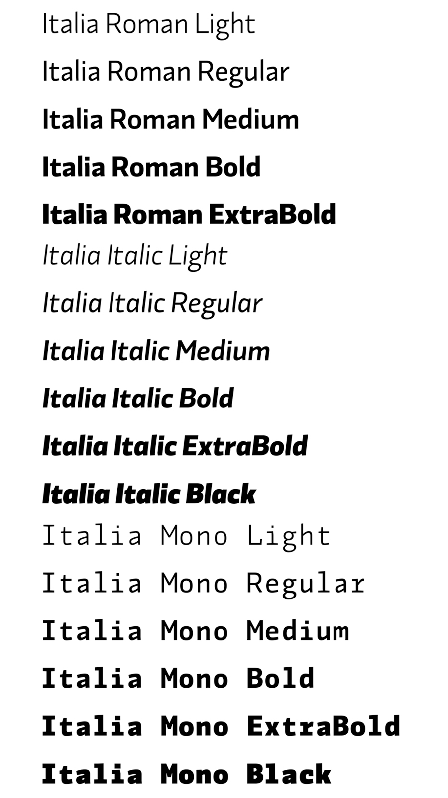

La luce solare bianca è un'onda elettromagnetica. Isaac Newton scoprì, con un prisma, che questa luce è composta dai sette colori dello spettro solare (rosso, arancio, giallo, verde, azzurro, indaco, violetto). Il bianco non è un colore, ma la somma di tutti i colori dello spettro. Il nero è l'assenza di luce.
Lettering
Cos'è un carattere?
Il carattere è un insieme di numeri e segni accomunati dallo stesso stile. Ogni carattere ha un font che rappresenta un’intera serie di segni.

Famiglie Tipografiche
Le famiglie tipografiche sono un gruppo di font che seguono gli stessi criteri (aspetto, struttura, proporzioni). Le varianti principali sono date da dimensioni del corpo, pesi e spessori, inclinazione e larghezza.
Categorie di carattere
“Serif” significa grazia, ovvero allungamenti alle estremità dei caratteri, rendendoli più eleganti. “Sans serif” significa senza grazie, detti anche bastoni.

Serif

Sans-serif
Aste
Curve: C, S
Rette: T, I, L
Miste: G, R
Varianti
Spessore delle aste

Larghezza del carattere

Pendenza

Elementi del carattere
- Linea di base
- Asse
- Discendente
- Ascendente
- Apice
- Vertice
- Asta
- Asta trasversale
- Barra
Spaziatura
La spaziatura è lo spazio tra due lettere o due parole. Gestirla correttamente migliora la leggibilità.
Crenatura: Spazio tra due lettere specifiche
Tracking: Spaziatura uniforme tra tutte le lettere di una parola o riga
Interlinea
L’interlinea è la distanza tra la linea di base di una riga di testo e quella della riga successiva. Un’interlinea troppo ridotta diminuisce la leggibilità dei testi lunghi.

Allineamento
Bandiera
Centrale
Giustificato
Giustezza e Corpo
Giustezza: misura in larghezza di una riga (mm). Corpo: altezza complessiva del carattere (pt).
Valori del carattere
Verbale: parola con significato. Iconico: rappresentazione come immagine.